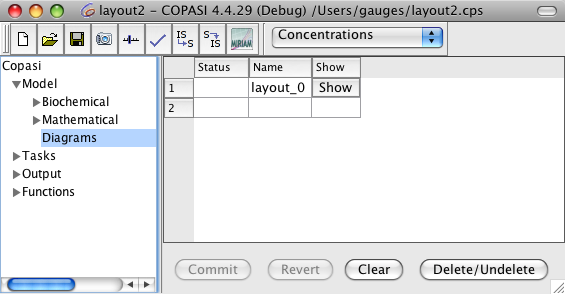
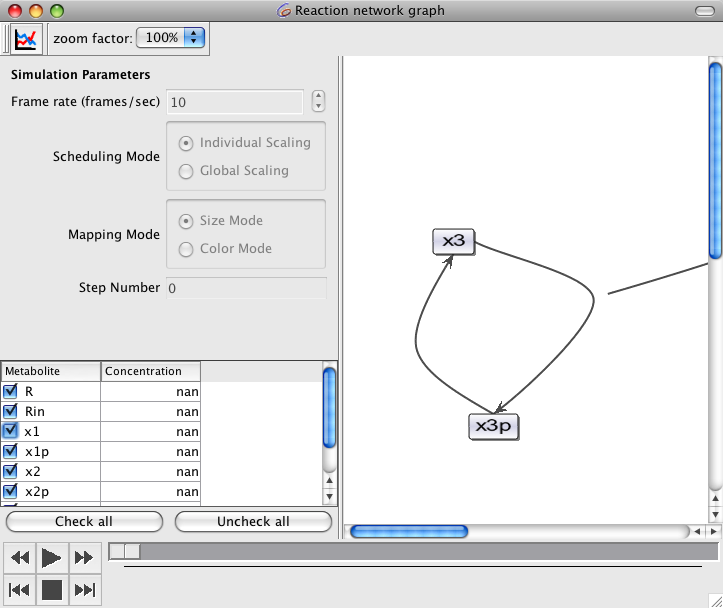
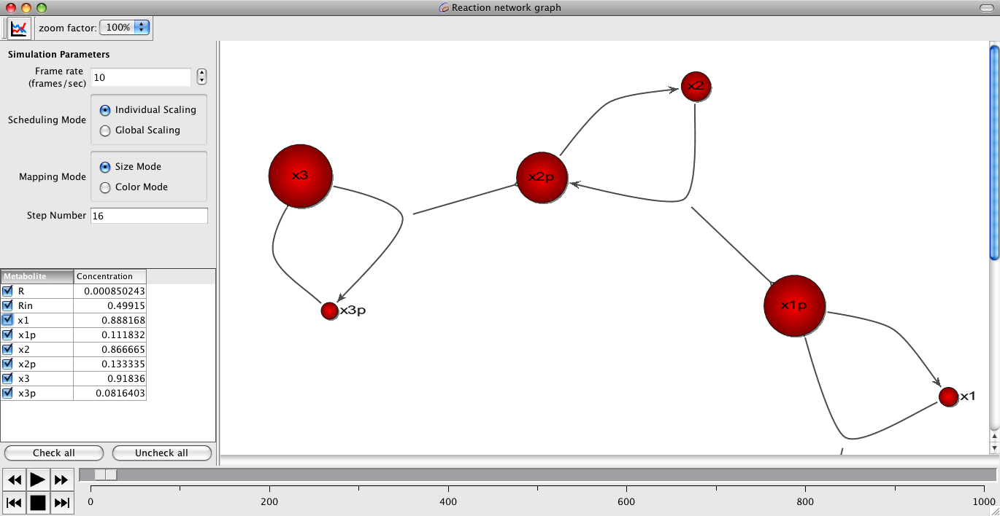

Starting with version 4.4.28, COPASI has the possibility to read and display layout information from COPASI and SBML files. An additional feature that comes with the diagram display is the possibility to display animations of time course data from simulations. Currently there is no way to create new diagrams within COPASI, but we hope to change that in the future. The layout information can either be obtained in the form of the SBML layout extension (see the
SBML Layout Extension Specification for further information) or from a COPASI file that includes layout information. Since there is no way to create new diagrams in COPASI, the only way to come up with a COPASI file that includes layout information is to create an SBML file with layout information and convert it to a COPASI file. The layout in COPASI files is also stored in the form of the SBML layout extension. Only that the SBML object ids are replaced by the corresponding COPASI keys.
There are several ways to create layout information for an SBML model. The
Sycamore web application allows you to load SBML files, create layout information for the model in the file and save the model with the layout information back to file. It provides different methods for generating the layout and the layout can be modified manually as well.
SABIO-RK is a reaction kinetics database that allows you to create SBML models from the entries in the database. The model can be saved as an SBML file and it can also create layout information for the model.
Another web application that allows the user to add layout information to an SBML file is Frank Bergmanns
SBML Layout Viewer. It allows the user to influence the layout creation by setting some parameters.
Franks Bergmanns layout creation tool is also part of
SBW and since the latest Versions of COPASI do include some SBW support, it is possible to send a model from COPASI to the layout tool and get back a model with layout information.
If the model file you loaded contains layout information, the diagram table contains an entry for every layout that is contained in the file. In order to display a specific layout, you have to either click on the show button beside the layout or double click on the layout entry in the table.
|  |
| Diagram Table with one Diagram Entry |
In the layout window that comes up, you can see some controls on the left side and on the right side you see the actual layout. When the layout is first opened, all species are displayed as rectangles.
|  |
| Diagram before loading Simulation Data. Some Controls are disabled. |
Currently the menu bar at the top contains two control elements. The first one is a button that allows you to read time course data from COPASI if any has been calculated. If a time course has already been calculated when the layout window is opened, this time course data is imported automatically. Each time you rerun the time course simulation in COPASI, you have to reimport it to the layout if you want to display it.
Since the time course data is copied when it is imported to the layout, you have to take care that you have enough memory in your machine if you either have very large simulations or if you want to animate the data in many different layout windows. In the future we will try to handle this more intelligently.
The second control element in the toolbar is for zooming in and out of the layout view.
If there is no time course data yet, many of the controls on the right side are disabled since they only make sense in the context of animating simulation data. Once simulation data has been loaded via the button in the toolbar, those controls are enabled.
If you don't need the controls, but just want to look at the diagram, the individual controls can be hidden via the View menu in the menu bar.
In order to animate your simulation data, you can use the player controls at the bottom of the screen. The controls look like the controls on a CD player and it should be easy to figure out what the individual buttons do. There are buttons to start and stop the animation, as well as buttons to forward and rewind or single step through the animation. You can also drag the slider beside the buttons to go to a certain time point within the animation.
During the animation, the species are displayed as colored balls. The speed of the animation can be controlled by the Frame rate element at the top of the controls.
|  |
| Diagram Window with paused Animation in Size mode. |
Depending on the Mapping mode that is controlled by the radio button group with the same name, either the size of the balls or the color changes to reflect the concentration of the species at a given time point.
The radio button group above the Mapping group, called Scheduling Mode determines how the size or color of a species is determined during an animation.
If the control is set to
Individual Scaling, the size (or color) of a species is determined by the minimum and maximum value of that species. If the control is set to
Global Scaling, the size or color is determined by the minimum and maximum values of all species in the model.
The last control element is the table with the names and concentrations of all species contained in the layout. The concentration displayed is the concentration of the species at the given time point of the simulation. All species that are checked vary their size or color during the animation, species tha are unchecked don't.
There is also the possibility to export the current layout as a bitmap. In order to do this, you select the Create Image menu item from the View menu. Currently, this only allows you the create a bitmap of the layout as it is displayed. Parts that are not displayed because the window is to small are not written to the bitmap. So in order to make a bitmap from large layouts, you might have to hide the controls as described above, make the layout window as large as possible and change the zoom factor until the full layout is displayed in the layout window. We also hope to make this more convenient in the future.
Since this is an early version of the diagram display, there certainly are still many issues, but we hope that it might be helpful nevertheless. If you have suggestions or complaints, please tell us, preferably via the
User Support Forum or if you think it is a bug via our
Issue Tracker.